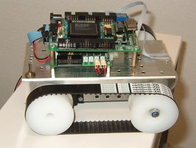

En el laboratorio de Arquitectura e Ingeniería de Computadores los alumnos trabajan en el estudio y diseño de una CPU de docencia, de tipo RISC, de 16 bits, con una arquitectura Harvard y un total de 8 instrucciones. Esta CPU ha sido implementada en VHDL y sintetizada en una FPGA de tipo Spartan I (XCS10).
Una de las aplicaciones realizadas ha sido el robot de docencia, mostrado en la figura 4, programado para seguir una línea negra sobre un fondo blanco. Los resultados de sintetizar la CPU junto con la memoria que contiene el programa se muestran en la tabla 2.
 |
|
|
El programa del robot sigue líneas ocupa en total 56 bytes y la FPGA se encuentra al 75% de ocupación. Otros ejemplos de aplicaciones se muestra en la tabla 3.
|